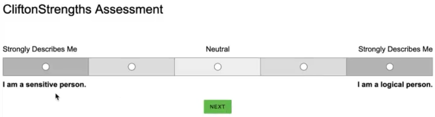
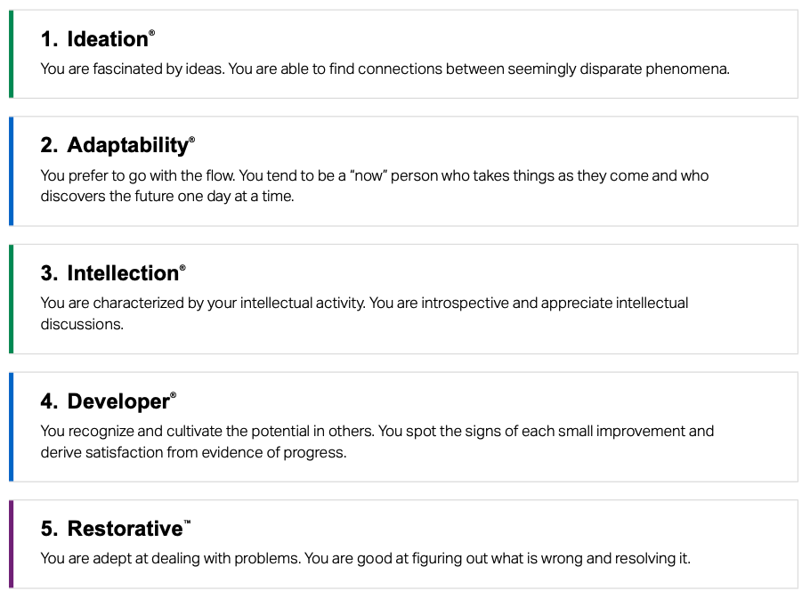
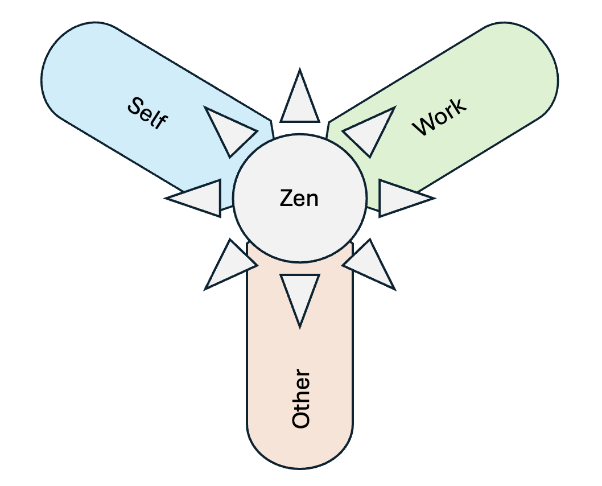

I’ve taken quite a few online personality tests. I learned about my accountability style with Gretchen Rubin’s Four Tendencies assessment. I learned about my psychological personality traits by taking the Big 5 questionnaire. I even know which Harry Potter house the sorting hat would place me, and I’m not even much of a Harry Potter fan!
Indeed, there is something fun when it comes to learning about ourselves, and that’s about as much stock as I placed into the world of personality assessments. They’re something fun and curious, but after the initial wave of novelty wears off, the results melt from my brain and dribble out of my ears.
This was my attitude when I recently took the Clifton Strengths Assessment by Gallup. I got the opportunity to take the Clifton Strengths Assessment for free through my work with the Post-Internet Project, and after some initial resistance I agreed to give it a try. So, one morning last week, I brewed a cup of hot coffee and sat down at my desk to begin.
Right away I noticed that this assessment felt different from the ones I had taken before for two reasons:

Combined, these two qualities encouraged a sense of honesty from me. I couldn’t game the system, and I couldn’t overthink it. I must admit that I was intrigued to see what sort of results would come out of the answers I was giving, and, in just about thirty minutes, I had them.

The results I got from the assessment deeply resonated with my own sense of who I am, which was unexpected! I know it may seem stupid to be surprised that a personality test accurately captured some features of my personality, but after so many “meh” results from other tests, this one truly felt… well, surprising!
Upon first impression, these strengths all feel true to myself, but what else do they say? Are there some nuggets of wisdom that I can use to improve myself, my work, and/or my relationships? I was sent some more imformation about each of these strengths by a friend of mine, Adnan Iftekhar. Below I present and synthesize some of this information.
Ideation
Spontaneous, Creative, Innovative, Collaborative, Artistic, Insightful, Resourceful, Stimulating
Adaptability
Flexible, Responsive, Easy-going, Present, In the moment, Spontaneous, Agreeable, Existential
Intellection
Introspective, Solitary, Intellectual, Philosophical, In-depth, Reflective, Discontent, Thinking, Intense, Musing, Driven
Developer
Patient, Perceptive, Effective, Encouraging, Investing, Others-orientated, Observant, Growth-orientated, Self-sacrificing, Helpful
Restorative
Problem-orientated, Driven, Investigative, Weakness-orientated, Responsive, Unintimidated, Insightful
What a given strength needs to function and what it can produce.
| Strength | Needs | Produces |
|---|---|---|
| Ideation | Freedom to explore possibilities without restraints or limitations. | New and fresh perspectives. |
| Adaptability | Present pressures that demand an immediate response. | A willingness to follow the lead of change. |
| Intellection | Time for reflection and meditation. | Depth of understanding and wisdom. |
| Developer | Someone to invest in. | A commitment (time and energy) to human growth. |
| Restorative | Problems that must be solved. | Courage and creativity to problematic situations. |
Synthesis
What I need most is the freedom to explore, concrete problems to solve, meaningful relationships, and solitude for reflection. If I have these things, then I can bring a creative perspective to the challenges that most need solving, and I can temper this creativity with wisdom, understanding, and compassion.
What motivates and demotivates a given strength.
| Strength | Motivating | Demotivating |
|---|---|---|
| Ideation | Coming up with something brand new. | Doing what we’ve always done. |
| Adaptability | Spontaneity. | Predictability. |
| Intellection | The theoretical because it is the precursor to the practical. | A thoughtless approach to anything. |
| Developer | Human potential and progress. | Wasted or unrealised potential. |
| Restorative | Finding solutions. | The idea that problems will disappear if they are ignored. |
Synthesis
How can I motivate myself to meet the needs I described above? I should keep my love of building something new at the forefront of my awareness. Further, I should remember how important it is to me to bring out the best in myself and others, and to not be afraid to think too abstractly. Finally, I should avoid dull routine and embrace novel ways of living and working.
The best and worst instantiation of a given strength.
| Strength | Balcony | Basement |
|---|---|---|
| Ideation | Improves on the existing, learns quickly, agile mind | Serendipitous, lacks follow-through, creates more work, always something new, never satisfied |
| Adaptability | Flexible, comfortable in times of change, easy to get along with, goes with the flow. | Directionless, indecisive, sheep, inconclusive, whimsical. |
| Intellection | Excellent thinker, enjoys musing, capable of deep and philosophical thought, able to work alone. | A loner, slow to act or wastes time thinking too much, isolated, doesn’t work well with others. |
| Developer | Grows talent in others, teacher, coach, enjoys helping others succeed, invest in others. | Not an individual contributor, wastes time on low-potential people, spectator. |
| Restorative | Problem solver, trouble shooter, finds improvements and solutions. | Focuses on weaknesses, punitive, negative, critical. |
Synthesis
The balcony and basement descriptions seem to serve as guideposts in successfully developing these strengths and warning signs when things may be going off the rails.
Guideposts: Reward myself for improving on existing things, learning new material, and building up others, especially if I do these things with a sense of flexibility.
Warnings: Watch out for those times when tempted to take on a new project. Specifically, examine my motivations for the new project and bias towards completing existing projects before taking on anything new. Additionally, be wary of overthinking, indecisiveness, and negativity, as they may be symptoms of a lack of clarity or conviction. Finally, I need to really value my own time, being careful to give it only to those who most deserve it.
The underdeveloped and mature version of a given strength.
| Strength | Raw | Mature |
|---|---|---|
| Ideation | Fascinated with fantasy. | Imagination to innovate and improve reality. |
| Adaptability | Short attention span. | Intense awareness to respond with immediacy. |
| Intellection | The need for introspection leads to isolation. | Deep self-reflection is a prelude to deep conversation. |
| Developer (1) | The key to growth is to invest in myself. | The key to growth is to invest in others. |
| Developer (2) | All potential is equally important. | Wisely chooses in whom to invest. |
| Restorative | Has an eye for what’s wrong, but lacks solution or effort to fix it. | Sees brokenness and contributes to healing. |
Synthesis
The raw and mature distinction seems to distinguish between what only appears to be a healthy strength and an truly healthy strength. In a certain sense, it’s striking a balance where a strength is cultivated fully, but not taken too far. Underlying each balancing point is the necessity of strong awareness and concentration, without which no balance could be struck. I would be wise to do the following:
- Imagine big, but stay grounded in reality.
- Reflect deeply on life, but be willing to share it with others.
- Invest in others, but be wise in the choice of whom to invest.
- Recognize what isn’t working, but don’t hold back in fixing it.
According to Gallup, the Clifton Strengths Assessment results are very stable over time, meaning that the results I’ve posted here should be relevant for my personal and professional life for years to come. With that in mind, it seems pertinent to nail down what I can carry forward with me into the future. For this, I’d like to summarize what I’ve learned about my top five strengths with respect to three domains of life: self, work, and other. I imagine each of these domains as petals out of a spiritual center, my personal spiritual practice being Zen Buddhism.

A strong sense of awareness and concentration is necessary to live well. That is, they are necessary to ensure that ones thought, speech, and action come from a place of clarity and wisdom. Therefore, a precursor to all of what follows is this:
Maintain a strong Zen practice.
To wrap this up in the proverbial bow, I want to set an intention with how to use the knowledge that I’ve synthesized here. I’m not typically one for checklists and rules, so setting some simple “read this over once a day” heuristic doesn’t hold much appeal to me. However, there is an unavoidable truth in learning: memory requires repetition. So, I’m going to make some flashcards for the bullet points I listed above and keep them on my desk for a while. Flashcards are old school, but damn are they effective. After a few weeks these gems should be firmly lodged in my memory, and after a few months (assuming I’m practicing what I’m memorizing) they should be second nature.
This post has been entirely about me, Nick, the author. If you read the whole thing, great! Thanks for your time and attention. Even though this has been an exercise in my own personal growth, I hope you found something useful or interesting to you.